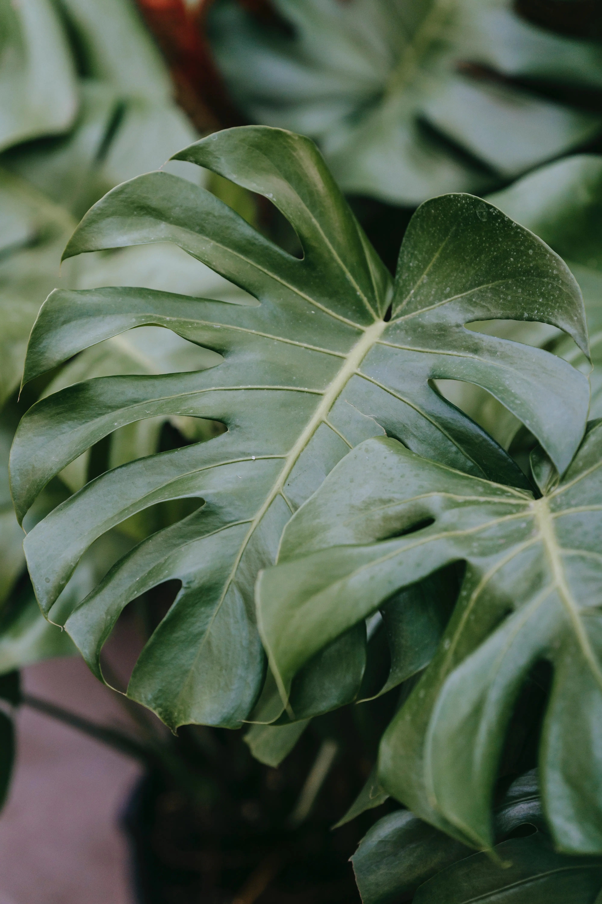

What are Aroids?
The Araceae plants, also known as the Arum family, are popular indoor and outdoor plants in mild climates. Members of this family are commonly known as aroids, and they are well known for their beautiful leaves and sometimes even flowers. A plant that not only brings aesthetics but also naturally freshens the air and eliminates toxins indoors makes aroids a good choice for a houseplant. Aroid brings benefits and beauty anywhere they are placed, but with many options to begin plant care, from Philodendrons, Monstera, Colocasia, and much more, which of the many genus and species makes the perfect beginner houseplant and how to care for them.